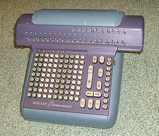
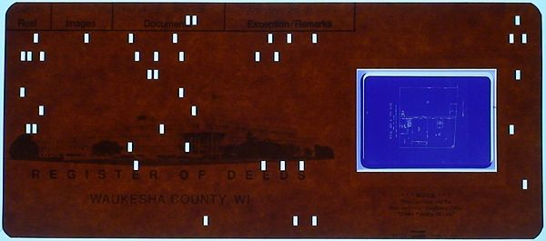
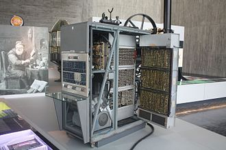
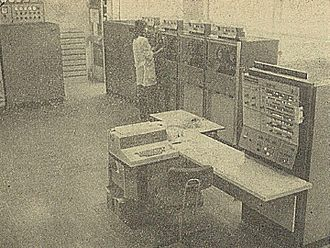

[Nerd Alert! I'll try to make it easier reading for those who don't care about the "nitty-gritty" by relegating the more tedious parts to footnotes. And to make heavy use of links to make information available. Any time you're feeling "bogged down" in details, feel free to skim to a more interesting passage. I've added "Nerd Alerts" to the footnote references to indicate which footnotes have TMI (Too Much Information) and the subject of the footnotes (computer science, statistics, etc.)
Note: If you go to a footnote, at the end of the footnote there will be a "back-link" character, '↵,' as a return link. Click on that and it will return you to where you came from -- no need to scroll back thru countless paragraphs. That should work with screen readers too. The browser's back arrow will work also (but not with screen readers.]
"Carpe diem.”
That Latin phrase is usually translated, all too literally, as "Seize the day." But the original spirit of the saying may be more like "Seize the moment" or even "strike while the iron is hot."
My career path was not a series of carefully planned steps. Nor a "random walk." It was more a matter of preparing myself for the next step when it presented itself and being flexible enough to take advantage of opportunity when it knocked.
Looking back, I'm surprised at how industrious I was, even as a little kid. Like many of you, I started out with a lemonade stand. Then on to door to door selling to neighbors chances on punchboards - not knowing they were illegal. Then the usual boyhood odd jobs -- mowing lawns, shoveling snow, raking leaves, helping on a paper route, etc. I also remember selling magazine subscriptions door to door. My high school and college years saw me in a wide variety of part time and summer jobs: paper boy; newspaper truck boy delivering bundles to stores and route carriers; summer camp counselor; retail sales in a liquor store; ditch digger; making awnings, tents, beach umbrellas and custom covers for boats -- even being director of a summer camp. There was no strategy to those jobs other than earning income for pocket money or for the next semester's books and expenses.
After high school: My first "Real Jobs.”
My first job with a weekly paycheck almost killed me. The job was with the circulation department of a daily newspaper as a "truck boy.
Ditch digging and tent making were my most interesting, enjoyable -- and instructive of my summer jobs. I enjoyed the former , because my mind was free to wander and contemplate and it was body building.
My summer job as a cutter at the tent and awning company taught me a lot. I was raised by a Victorian mother and grandmother who had aspirations of gentility. My workstation was next to a production line of sewing machines, operated by middle aged women. I was amazed at how much they swore and how bawdily they talked. It was a game to them to see if they could make me blush. Very educational sociologically - and sometimes in other areas.
I was an utter failure at one summer job, going door to door selling encyclopedias. My trainer was one of their top sales persons and tried to help me with the scripts, but my heart wasn't in it. It seemed to me that their script was highly manipulative and the the company targeted low income people who couldn't afford the expensive subscription and played on their guilt. Perhaps that wasn't my judgement call to make, but I quit that job after just a few days.
One job that I worked at off and on for several years and enjoyed was doing market research surveys. And surveys for a political science research project.
Very different was a job my friend Renny Boezi and I had for two holiday seasons at a privately owned wine and liquor store. It seemed tragic when panhandlers came in with a handful of nickles and dimes to buy our cheapest bottle of muscatel. I didn't like facilitating their addiction, but the law required selling to them if they were sober. I hadn't suspected I had a knack for retail sales, but had more knowledge of liqueurs and wines than I'd realized. The owner was pleased that I could "Sell up." "If you're looking for a gift, we have some nice bottles of ..." Or, "If you like __ then you might enjoy trying __."
He could have lost his liquor license for having an open bottle on the premises, but in his office, one desk drawer contained some "Christmas cheer" and by Christmas eve closing time, he would be in a very jolly, expansive mood. He would tell us "As a present, you can have a bottle of whatever you want." Which we did.
Those were the most memorable jobs of my student days.
After college: Earning a living
As I mentioned in a previous chapter, after finishing my undergraduate work in 1958, I found myself in the middle of a recession. Jobs were scarce, jobs that paid enough to live on, even in just an unfurnished room, were even scarcer. I had a good general education, but little specific training or job experience. So I tried my hand at substitute teaching. I did well at teaching 9th grade social studies for a three day gig. And then took an assignment filling in for a high school math teacher who caught measles from a student. That ended sooner than expected when I caught mumps from a class. I was sick as a dog and after recovering, decided substitute teaching wasn't the solution.
Previously I mentioned that at the end of my summer job as a laborer, the personnel guy that had hired that bunch of summer students called us together at the end of our working there and gave us a "If you're ever looking for a job, please keep us in mind" pep talk. So now, I took him up on it an applied there for a job. Preferably one that didn't require climbing roofs during thunderstorms. After studying my application he said, "You've had a lot of math. If you had a course in statistics, I think we could hire you." Not having a better prospect I signed up that fall for a course at Harpur in statistics -- and looked for part time jobs. One day I was in the administration building, heading up to the placement office again, when just before I disappeared from sight, an acquaintance caught a glimpse as I was disappearing and called out, "Hey, Bill." I turned around and descended the stairs to see why he hailed me. He explained, "I saw an ad for a place near here, they are looking for people to work on their loading dock. I'm on my way there now, would you like a ride?" It sounded better than no job. We filled out applications and were interviewed on the spot. And we both were offered jobs. But the guy who interviewed me, said "I see you've had a lot of math. We have an opening in our engineering department for someone to make calculations. It pays $.35/hr. more than the loading dock job, are you interested." That was one of the easiest decisions I've ever made! I could walk from class to work and vice versa. I didn't have a car, but there was a guy in the engineering dept. who lived near me and I could ride with him for a few bucks a week.
At the time, computers cost millions of dollars and took up a whole floor of a building and electronic calculators hadn't been invented, so engineers used slide rules, paper and pencils, or electro-mechanical calculators to solve equations. I was hired as a "statistical clerk"{Nerd Alert} and given a desk with 1959's state of the art equipment, a Marchant Figurematic.
A full-time job: Starting as a department manager!
Apparently he liked my work and my work ethic. My manager, the chief engineer, called me into his office toward the end of the fall semester and asked if I was planning to take any courses the next semester. Hearing that I wasn't, he said, "Good, we're going to start a data processing department, we'd like to hire you full-time to set it up and manage it."
It was a family owned company. I'd be working for his wife, the company's treasurer, who was the daughter of its president and principle owner. The new found prosperity as "Data Processing Manager" (even though as yet I had no employees to manage) allowed me to marry Barbara. She was a newly graduated art teacher, who found a job teaching at a junior high school a couple of blocks from my employment and we found a tiny apartment a block away. We didn't even need a car. My professional career was launched.
We implemented and ran all the usual accounting applications, such as Accounts Payable, Accounts Receivable, General Ledger, etc. (Payroll continued to be done by an outside service.) But the data centers main function was information retrieval. Aperture cards were the key.
After a couple of years there, I learned that I was going to be a father, which prompted reviewing my situation. My tiny department was was running fine, all the intended applications were up and running and the equipment was running at capacity -- no new development was on the horizon. It was a family run company, there was no advancement path for those who were not member of the family. It was time to move on.
Remembering the fellow who'd told me he'd hire me if I took a course in statistics (which I hadn't used yet). I reapplied to General Aniline and Film Corp.'s Photographic Division in Binghamton (the company I had cheerily dug ditches for) and and was interviewed. They were looking for an "operations analyst" to solve problems using a fairly new mathematical technique, linear programing. I told them I didn't know anything about it, and was told, "Don't worry about it, you'll learn." I was hired with a nice raise. Which was welcome, with a child on the way and my wife had resigned her job. After receiving my letter of acceptance with a start date 30 days ahead, I turned in my letter of resignation to my employer, confident they would appreciate having a full month's notice.
A bump in the road: The best laid plans ...
To my surprise, when I turned in my letter of resignation, the response was, "You're fired. Pack up your things and get out!" My pride was hurt, but I wasn't worried, my new job would start shortly. Except that when I got home, a letter from GAF was waiting, which said, "Don't resign yet. A temporary hiring freeze has been ordered. We expect to receive an OK for you to start early next year." Up the creek w/o a paddle. No job and a baby due soon. And a man was supposed to be "a good provider."
I didn't have the courage to tell my wife that I'd been fired. For several days I dressed up each morning and left the apartment at the usual time and killed time till it was time to return. I did that for several days before confessing our plight.
Temp to the Rescue
Needing a job, I answered an ad from a temp agency. They "rented me out" to IBM's Federal Systems Division in Owego, NY -- as a technical writer. (In spite of the fact that I had no experience as a technical writer.) That division did work for NASA on the Mercury, Gemini and Apollo missions and built custom, on-board computers for the capsules. I was given some manuals that I was to make some revisions to, and told to familiarize myself with the manuals' organization and writing style. But, before receiving any actual assignment, I was transferred to a different job. Their data center called my temp agency requesting someone, ASAP, to work in their data center. My employer told them you've already got someone on board, who is experienced, use him. That's how I was introduced to the world of computers and the {Nerd Alert}IBM 650, the world's first mass produced computer. And the end of my extremely brief career as a technical writer.
My Land of Opportunity
Eventually GAF came through and I, like "Punxsutawney Phil," I came into my own in February.
I started in the photographic engineering department in a small group that primarily dealt with statistical analysis of the manufacturing plant's data, but also the divisions R&D data as well. I read up on linear programming, but before getting my first problem to solve, my job changed. The manager who hired me died. (I'd only gotten to speak with him once since starting the job.) The department was reorganized and the statistical section was spun off as a new department. While I was with GAF I went through countless reorganizations and job titles. If you haven't heard the classic joke, "Three Envelopes," read it in this footnote.
Marvelous Mentors
I had the good fortune to have had my career shaped by two extraordinary mentors: Stan Rogge and Cal Besore (both now deceased). I doubt that anyone ever had better managerial role models than Stan and Cal provided. I worked with and for them at two different companies. Out of deference to readers who may not be interested in such things, I'll discuss them in footnotes, but don't want to in any way diminish how much I admire then, appreciate their friendship, their patience and wisdom, and gratitude for all I learned from them. And their names will come up as I discuss my time with them at both companies.
As I mentioned, my first manager at GAF, the one who hired me, died soon after I started and the department was reorganized. Our section was christened "Plant Statistics,"my office mate Stan got an office of his own, and we moved from an administration building to one of the film manufacturing plants. We were no longer part of Engineering, Stan reported to the manager of manufacturing photographic film and paper. By virtue of the reorganization, my job title changed to "Plant Statistician" -- even though I had not yet done any statistics for them, and didn't for some time.
They got it so that the company's engineers and scientists could have access to the computer. They could sign up for 1 hour time slots to use the computer. I would not only maintain the sign-up sheets, but also to teach them programming and help them as needed. (Of course I had never programmed a computer, but a bunch of courses at IBM's Education Center soon fixed that.) [See any pattern?]
I remember an engineer in one of the programming courses I taught asking, in all seriousness, "How do I know the machine was plugged in when it gave me this answer? And how do I know it's not deliberately lying to me?" (I hope I answered diplomatically.) BTW, battery technology was not advanced back then and computers consumed a lot of electricity.
I had lots of job title changes, some relating to Quality Control, some statistics, some to computing, but that phase of my career culminated with my being "Manager of Scientific Computing," with a talented staff.{Nerd Alert}
My interest in information retrieval, whetted by my venture with retrieving transformer designs, didn't disappear when I changed employers. I'd written a program to do KWIC indexing for our R&D department in the Photographic Division that I thought would be useful to other companies. Nothing about it was proprietary, so I donated the program to the 1620 Users Group. And gave a brief talk on it at the next meeting of the 1620 Users Group at their next annual meeting, which was in Montreal. The paper, which was published in their proceedings, was my one and only publication in which I was the sole author. Not much claim to fame in the academic world.
As mentioned in the chapter on education, I decided to get a masters degree in Information Science. I'd been doing a lot of work for a crystallographer who worked at the Central Research Lab of GAF's Chemical and Dyestuffs Division, in Easton, PA. Easton was next to Bethlehem, PA where Lehigh U. was located. Lehigh had a masters program offered by their interdisciplinary Center for Information Science (which happened to be under the aegis of the Philosophy Department). The GAF lab in Easton had a PhD chemist who also was a patent attorney, Dr. Albert C. Starke, in charge of their library, who was active in chemical documentation. I was accepted at Lehigh and we worked out a deal whereby I would take a leave of absence from GAF Binghamton, transfer to GAF Easton, work half-time for Dr. Starke, at half pay, but with all benefit rights preserved. I spent two fascinating years there, working on their GADSAR project.{Nerd Alert}
My half time work schedule and limited finances only allowed taking two courses per semester, so I hadn't quite finished when Cal called after two years. They had a new project, using a process control computer to operate an automated warehouse, completely in the dark, to store master rolls of photographic film and needed a body for that project. He couldn't hold my position open any longer, it was return or be replaced. I was tempted to stay, officially be hired by that division and complete my degree. Al would have hired me full time, but there was a problem. The lab was being moved to Woodbridge, NJ, an hour further from Lehigh.
"You can't go home again."
GAF Binghamton retrieved me, not only because of their ambitious, pioneering, automated warehouse project, but also because they were replacing the faithful old 1620 computer with an IBM 360 Model 40 and conversion work had to be done.
Lots of overtime was required, but we pulled it off. The new computer was vastly more powerful. Signing up for an hour of having the computer to yourself had been a thing of the past long before I transferred to PA. Now we had time-sharing (I did some systems programming and modified an IBM internal project to work for us). Now we had terminals throughout the plant and R&D labs. And the capacity to give timely support to manufacturing operations. We still provided support to engineers and scientists all over the country, if requested. And still at no charge. More and more, the programs were purchased from software vendors, or written by our staff for "internal customers." I taught our programmers how to write more versatile programs, that could easily be maintained, expanded or generalized. And taught in-house courses on programming, statistics and on design of experiments.
Stan, who had risen to be general manager of our division, left to be VP of manufacturing at an apparel company in NC and Cal soon followed. One of my colleagues from our Plant Statistics day, an industrial engineer, was selected as Cal's replacement. He was a decent guy and competent, but seemed to me uninspired and uninspiring, the fun was gone, and now it was just a job.
Corporate HQ took control of all the corporation's computers. I found myself in a new organization, reporting to someone in NYC, whom I never got to meet before they reorganized again. I then found myself in a Binghamton branch of a Corporate Systems Engineering Department, with most of my old programmers working for me and some new faces the new management had hired. And no longer supporting other locations. My new manager was on site, a photographic engineer from our early days in Plant Statistics, but quite rigid. I held weekly symposia where one of the staff would present an idea or technique that he or she had developed or discovered which they thought would be useful for the others to know. And the 'she' part brings me to the story of my insubordination to my new manager, which I somehow survived. We needed another programmer and he gave me the OK to hire one, but advised me "Don't bother to interview any women." That was a violation of state law, so I interviewed whoever Personnel sent. By far the best candidate was a woman who worked at IBM, but felt she didn't get the recognition she deserved. And took a pay cut to take the job. One of the best hires I ever made. Very professional, very experienced, and very bright. Perhaps the only reason I survived defying him was that he couldn't admit to Personnel or upper management that he'd asked me to disobey the law. Perhaps he would have found a way to retaliate, but they reorganized again before that could happen.
In one of the reorganizations, I found myself sidelined. Given a fancy title -- Director of Systems Development. With the responsibility of monitoring trends in computer applications and advising the corporation about how to keep up or to take advantage of new trends in the computer world. In actuality, the job consisted of going to computer expos and writing "white papers" that no one was interested in reading. Clearly low hanging fruit for any future "reduction in force." My pension wasn't fully vested yet, so I took advantage of years of assistance to R&D and was able to transfer to their Process Engineering Department. Usually process engineers have a lot of experience as chemical engineers. I had been a software engineer, a quality engineer and a systems engineer, but had never studied chemistry just picked up bits and pieces along the way as needed. But they thought my knowledge of statistics, math, and computers would be useful. My work for them did provide my boss with material for a paper, in which he took full credit for what I had done. But I survived long enough to get vested rights to my pension. My gripe with him soon ended when our whole division was closed and about 2,000 of us were laid off.
The Big World of Minicomputers
I took a job with Digital Equipment Corporation in sales support as a Senior Software Specialist, even though I had as yet, no experience with DEC's hardware or software. DEC was a great success story. They had come from being a start up by some MIT folks to becoming the second biggest computer company in the world. They had great products, a large base of happy customers, good management and good engineering. They seemed to be within reach of bypassing IBM. Few expected that they were approaching their zenith.
I worked three years for DEC, detailed in the footnote above. One project deserves special mention.
It was at a nearby GE plant that handled aerospace contracts. They had a contract from McDonnell-Douglas to build a flight control system for the F/A -18 Hornet. (In 2022 the F/A-18 starred in the exciting movie, Top Gun: Maverick.)
GE had built many flight control systems, but this was their first one that was all digital. A unique and important design spec is that it use a "fly by wire" approach. "Fly by wire" simply means that there is no direct mechanical or hydraulic connection between the pilot's controls in the cockpit and the ailerons, trim tabs, etc. that are to be controlled. (Eliminating the hydraulics saves weight and cost thus improving the plane's combat capabilities.) In fly by wire, the flight control computer is the only connection between the controls and what they control. For example, traditionally a pilot pulled back on the stick or yoke to make a plane climb. How far back and how fast the pilot pulls back directly controls the related moving parts. If the pilot "asks too much" of the plane, the wings may break off. But the F-18s flight control system was designed to prevent that. If the pilot pulled all the way back on the stick, the flight control interpreted that as "give me the maximum rate of climb that the plane can give without the wings falling off." The flight control system had to take into account the plane's current air speed, altitude, attitude, weight, specifications, etc. and execute the maneuver safely. And making those decisions very quickly in combat conditions. That's what made the F-18 so formidable. (And capable of the extreme maneuvers called for in the movie's story-line. It was crucial that the flight control system was free of "bugs." A failure during a test flight would mean the loss of the crew's lives and the loss of a 65 million dollar plane. The cost of a failure during combat, could be astronomical and super catastrophic -- such as a failed mission or even a lost war.
So GE hired DEC to check their software, and I was in charge of DEC's team. GE's flight control system had to be redundant, that is, it had to keep running even if a computer failed. Therefore, GE used four, identical computers, all running the same software and all communicating with each other, as the flight control system. Quadruple redundancy. We (the DEC team) attached process control computers to "spy" on the instructions each of GE's computers were executing and to monitor the communications between their 4 computers. And of course to see if all were doing what they should be. My crew was all very good and didn't need much "babysitting."
You've all watched a marching band, where suddenly a band member realizes they are out of step and does a hop or takes one or two short steps to get back in sync with the others. GE had an algorithm to determine if any of their 4 computers got "out of step" and if so, to get them back "in step." Or, if one of their computers "got sick," to disable them. It could operate as long as one of its computers survived. I wrote a program to simulate the performance of their algorithm and make sure there weren't any bugs in it's performance.
Apparently the DEC crew did our job and the GE crew did theirs, because I never heard of any crew or planes lost because of failures of their flight control system. Before we bid adieu to the F-18 project, I want to praise GE's project manager Loren. I've never seen any one who could multi-task nearly as well as he. His project management skills were phenomenal. As I recall, he was managing a project that used between 80 and 100 people at a given time. And he seemed to have the entire project plan in his head and know the status of each task in the project plan and of where each player was in his tasks. That doesn't seem possible, but he sure gave a good approximation to doing that. He was outstanding.
As my Glens Falls assignment was drawing to an end, my manager informed me that the number of people doing such work was being reduced, and that my present position would be eliminated. But DEC had two positions open that were available to me. One was a rather boring sounding job in Marlborough, MA - a nice enough town, but a higher cost of living and at the same salary. The other job is one I would have given a eye tooth for a couple of years previously, but the timing was bad. This job was in Maynard, MA, at DEC's HQ. A charming town in Emerson and Thoreau country. A much higher cost of living, but at a salary that more than made up for it. DEC wanted to develop a new database management system and offered me the chance to be in charge of that project. Half of my time was to be spent at DEC HQ, interfacing with the folks in charge of the various operating systems that would need to be interfaced to the new data base and with marketing folks and applications groups. The other half would be spent with the development team I would be directing, who were located in N. Ireland. A couple of years earlier I would have jumped at that chance, but now it had some downsides.
I don't know which I would have chosen if I had not gotten a call from Cal, inviting me to join him and Stan in NC. I went there for an interview with my boss to be, the VP of Finance, got an offer, brought the family down for a quick look see -- they approved and I accepted.
The Real Mayberry
Mt. Airy, NC is in a beautiful location. At the base of the Blue Ridge, 5 miles south of the Virginia state line, on the usually placid Ararat River, and is Andy Griffiths' home town. We bought a beautiful, vintage 1900 home there, for a song. Wraparound porch with a portico, 12 foot ceilings, 5 fireplaces, a library with built in bookcases (all of 3/4" knotty pine as was the paneling, and surrounded by majestic, giant, old trees. But a culture shock. Life was slower paced. And one's job seemed to be less a priority than in NY, PA & NH. And project deadlines were less of a priority than in those 3 NE states.
I was concerned that I might be perceived as a "Damn Yankee" or as a "carpetbagger," but that didn't seem to be the case. The important distinction seemed to be between "hill folks" (i.e. those from the Piedmont, but preferably born on, or in sight of, the Blue Ridge) and "flat-landers." People from Charlotte, Durham or Raleigh apparently were just as much outsiders as I was. Most of the residents had lived there for generations. (As I recall, one Congressional election focused on the difference between one candidate whose family had lived there 7 generations, vs a "newcomer" whose family had only lived there 5 generations.)
In the late 1970s, women seemed to have less status than in the other places I'd lived. I remember one afternoon meeting of the company's top managers, when the manager of our largest sewing plant stood up and said, "It's almost 5 o'clock. I have to leave now because my husband expects hot biscuits on the table when he gets home.".
[See the above footnote for details of my time there, brought short by a flood.] The city's economy never recovered from that flood. I was sure that my company would not be successful in its recovery efforts and started looking for jobs in Winston-Salem or Greensboro. Out of the blue, I got a call from my friend, the former production control manager, wanting me to come work for his employer, in Quakertown, PA., which is only 15 miles from Bethlehem.
His timing was great. Greensboro and Winston-Salem were both farther than I really wanted to commute on a daily basis. He put the icing on the cake when he said "Christmas activities are in full swing in Bethlehem. [It calls itself "The Christmas City.] Come for an interview and bring your family for a mini-vacation. If you don't want the job you'll at least have a good time." We did have a good time and I did accept the job offer. (I sadly said goodbye to Cal, but got to visit him and Dot several times before they died.)
Return to the Lehigh Valley
So, in 1980, I returned to the Lehigh Valley and have remained here ever since. I had liked the area when I lived here in the late 1960s. And and after one winter in Glens Falls, where we had a week where the high for the week was zero and every night sank below -30; and 3 years in NC where for 6 months of the year it was too hot to enjoy outdoor activities such as playing tennis or going for bike rides and so humid that my books mildewed, the Lehigh Valley seemed like a good compromise.
The job I was offered was working for a shirt manufacturer, this one a subsidiary of a major apparel company. My new company had been getting their data processing services from the parent company, but were not satisfied with the service, support, nor price they were charged. So they decided to form their own IT Department, get an IBM S/38 computer, and hire someone like me to make it a reality.
We did get a lot of applications up and running -- sometimes by buying software packages and sometimes by writing the programs themselves. Admittedly we were running behind the original schedule and under pressure. Our contract programmer sometimes dealt with that pressure by doing yoga exercises on his lunch hour. One day, one of the executives came in from lunch and, as I remember it, demanded that I fire the contract programmer because he was doing headstands, a yoga exercise. As I understand it, is supposed to improve the flow of blood to the brain. My recollection is that the executive demanded that I fire him immediately because I shouldn't let crazy people near our software. My attempts to explain that it was a long established exercise seemed in vain. Finally, I reminded him that I didn't work for him or take orders from him. I sensed I'd made a bitter enemy. A few months later, for reasons I don't know the details of, there was a meeting of the board. The president and the VP I worked for were out, and the new president was the guy I'd been undiplomatic with. I concluded I had no future there, resigned and went into business for myself.
"Tis a small thing, but mine own."
After decades of working for Fortune 500 companies, and being frustrated by their follies, the idea of striking out on my own sounded risky, but good. Aside from operating a lemonade stand (with my mother's guidance) my small business experience was pretty limited. I knew I didn't have the savings or financial backers(s) usually needed to launch a small business, but figured if I started small enough I could make it work. If you'll excuse a mixed metaphor -- pulling my self up by a shoestring. :)
But I was used to venturing on untrod ground, and hooked up with the Small Business Administration's Small Business Development Center at Lehigh U., read their brochures, got paired up with a coach from SCORE, formed a business plan, and forged ahead. "Nothing ventured, noting gained." I didn't have much capital to risk, so I initially relied on contract programming for income. I joined "Apple Computer Experts" (Apple recommended independent consultants) and also the Independent Computer Consultants Organization. (Both now defunct.) Sometimes I worked with partners, sometimes by myself, sometimes with as many as 5 subcontractors working for me. My final name for the company was "WT Associates."
I had some lean years and some quite prosperous years, the most prosperous being related to the Y2K problem. It's now fashionable in some circles to dismiss the whole thing as media hype and "fake news" hysteria. My polite response to that is "horse-feathers." If you chose to get your information from sources as reliable as The National Inquirer, shame on you. That's inviting being duped. The problem was real. Not that the world would come to an end, but that renewing auto registrations, insurance polices, etc. or any programs that dealt with one's age, mortgage schedule, company's accounts receivable, etc. could show your age as negative and your account balances as years overdue. People like me worked our butts of for most of 1998 and 1999 to keep those problems from happening. As the year 2000 approached, I put in a lot of 80 hour weeks and some 100 hour weeks. Woe unto anyone who has the chutzpah to try to tell me face to face that it all was "much ado about nothing." My mildest response might be "You've chosen to be misinformed and don't have a clue what you're are talking about!"
I did all sorts of stuff -- much more than you want to waste time hearing the details of. Some was high powered and fascinating; some very mundane. I worked in many different industries and for organizations of all types and sizes for two decades. I never formally retired. I just tapered off until finally the ride was over and I was ready to relax and focus on this website. [Website languages (e.g. HTML, CSS & Javascript are ever evolving) as are the variety of devices that view webpages and webpage design principles. I'm glad that better ways of doing things continually are invented.]
I may have portrayed myself as a "jack of all trades and master of none," but "jack of many trades, master of some," might be more accurate. During my long career (if I may call it that) I:
- was active in a lot of professional organizations;
- analyzed data for NASA, the US Forest Service, the US Coast and Geodetic Survey;
- developed the ASA method for determining the speed of color negative film; &
- did a lot in the fields of densitometry, design of quality control systems and several other areas
I made a living and often had fun in the process. For me, the game was worth the candle.
Continuing to end chapters in the spirit of Uncle Wiggily
stories:
Now if the rutabaga doesn't tattle on the sweet potato, I’ll next tell you about my family.